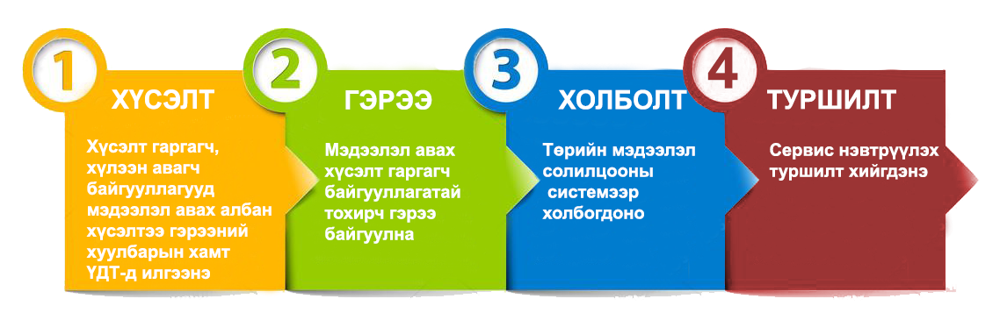

1. Холбогдох заавар¶
“ХУР” төрийн мэдээлэл солилцооны системд холбогдох заавар¶
Мэдээлэл авах, солилцох хүсэлтэй аливаа төрийн байгууллагад Үндэсний Дата төв УТҮГ - тай гэрээ байгуулсаны үндсэн дээр сүлжээ, системийн тодорхой шаардага хангасны дагуу ХУР төрийн мэдээлэл солилцооны системд холбогдох боломж бүрдэх юм.
Зураг 1. Төрийн байгууллага системд холбогдохдоо авах алхмуу
Сүлжээний холболт үүссэн тохиолдолд xyp.gov.mn домэйн нэрийг x.x.x.x хаягт зааж 443/tcp порт-д хандаж https хандалтыг шалгана.
- “VPN” сүлжээний нууцлал хамгаалалт
- VPN: OpenVPNХэрэглэгчийг таних: гэрчилгээ, хэрэглэгчийн нэр, нууц үгТүлхүүрийн хэмжээ: 2048 bit RSAУдирдлагын суваг: TLSv1.2Шифрлэлт: TLSv1/SSLv3 ECDHE-RSA-AES256-GCM-SHA384Холбогдох порт: 1194/udГарах өгөгдлийн суваг: Cipher ‘AES-256-GCM’ 256 bit keyОрох өгөгдлийн суваг: Cipher ‘AES-256-GCM’ 25
- Системд холбогдох дараалал
- ХУР” төрийн мэдээлэл солилцооны системийн “VPN” сүлжээнд холбогдоход дараах алхмуудыг гүйцэтгэнэ.Мэдээлэл солилцохХолбогдох хүсэлтэй байгууллага нь өөрийн төлөөлөн харилцах ажилтны мэдээлэл, цахим шуудангийн хаягийг албан бичгээр/гэрээгээр “Үндэсний дата төв”-д илгээн баталгаажуулна.Нийтийн түлхүүр солилцохБаталгаажсан цахим шуудан дээр “PGP” хос түлхүүр үүсгэн нийтийн түлхүүрээ солилцоно. Солилцохдоо http://pgp.datacenter.gov.mn/ цахим хуудсыг ашиглана. Цахим шуудангаар харилцах бүрт “PGP” түлхүүрээр зайлшгүй баталгаажуулсан байна.Хүсэлт илгээх“VPN” сүлжээнд холбогдох хүсэлтээ “Үндэсний дата төв”-ийн security@datacenter.gov.mn цахим шуудангийн хаягаар илгээнэ. Тус хүсэлтэд дараах мэдээллийг багтаасан байна.- Хандах хаягийн мэдээлэл /гадаад IP хаяг/- Сертификат дээр бичигдэх мэдээлэл> Байгууллагын албан ёсны нэр> Хэлтэс, нэгжийн нэр> Цахим шуудангийн хаяг
- Эрх үүсгэх
- “Үндэсний дата төв”-өөс мэдээллийн дагуу хандалтын эрх, гэрчилгээ, хэрэглэгчийн нэр, нууц үгийг үүсгэн илгээнэ.
Зааврын дагуу холболт хийж гүйцэтгэх.
Note
x.x.x.x ip хаяг гэрээ байгуулсны дараа олгоно.